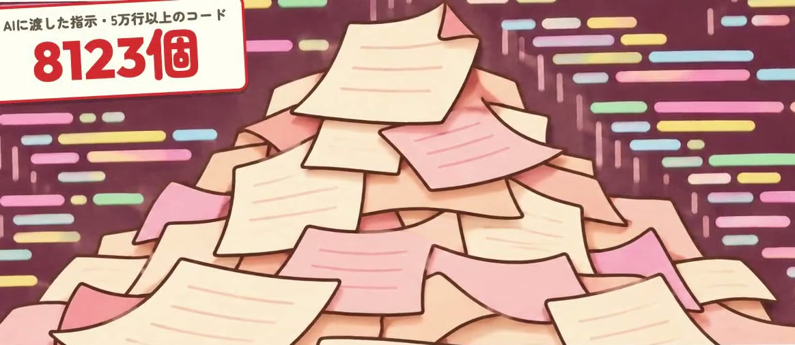
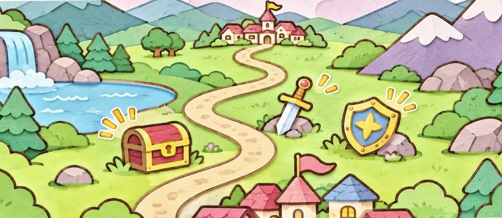
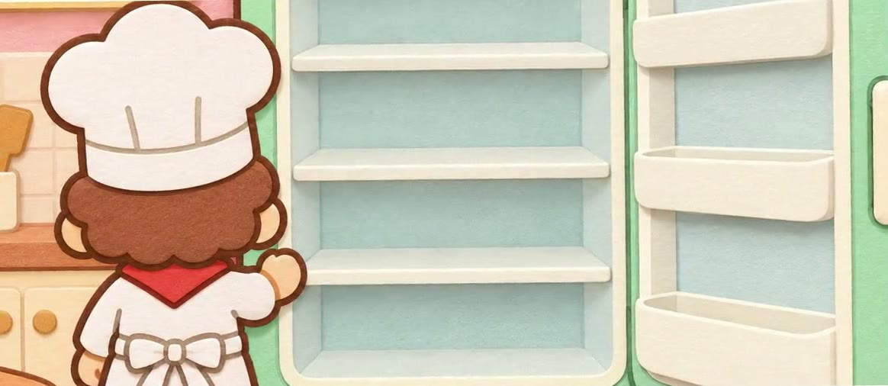
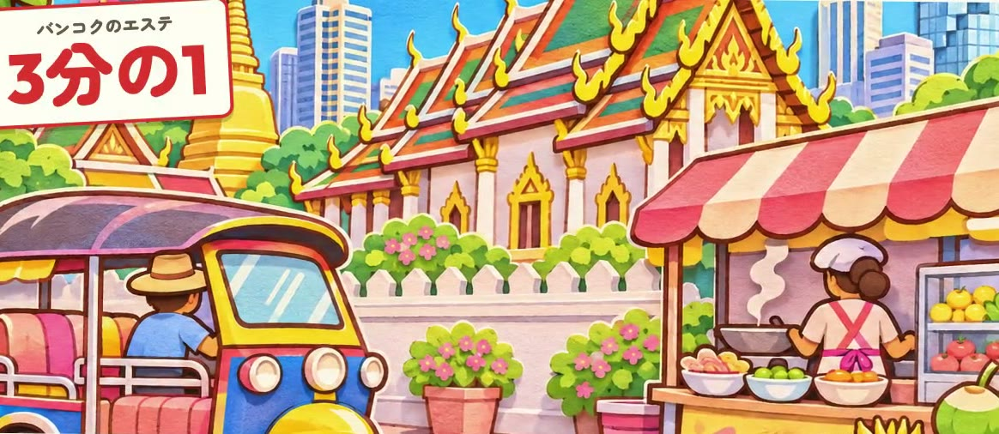
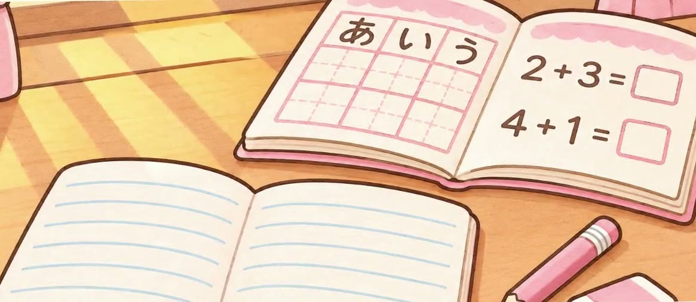

全部、AIに丸投げした。
気づいたら、24歳で海外ホテル暮らしの経営者になっていた
著者：大塚あみ出版社：新潮社
プロンプト集ではなく「AI時代の生存戦略書」。AIを使い始めた人にも、すでにどっぷり浸かっている人にも勧めたい一冊です🦫
💡 著者の最初の本『#100日チャレンジ』も、あわせておすすめです！
おけもんの読書ノート
大塚あみ 著（新潮社）を、飛び出す絵本で読む 16分44秒
カピバラのおけもんと、聞き役のインコが、
この本の7つの考え方を掛け合いで読んでいきます。
音を出してどうぞ。
そんな方、いませんか？
残業が減らない方、がんばるのにちょっと疲れた方にも、ぜひ読んでみてほしい一冊なんです😊
みなさん、こんにちは〜！
ストレングスファインダー認定コーチのおけもんです🦫
いきなりですが、この本は冒頭からこう言い切ります。
……って、聞き役のインコも最初からめちゃくちゃ怒ってました🤣
でもね、違うんです。
この本を書いた大塚あみさんは、エンジニア・作家・経営者。でも大学4年生のときの成績はGPA 0.9、自分でも認める本物の落ちこぼれでした。
そんな人がAIと作ったアプリで国際学会で発表し、その記録が1年後に本になり、今は24歳で海外ホテル暮らしの経営者になっているんです😳
結論から言うと、この本の答えはたったひとつ。
「がんばるのをやめて、自分の『欲』をAIに言うこと」。
予備知識はいりません。AIを触ったことがなくても大丈夫🙌
私が読んで「うわっ、ここ震えた…！」となった3つのポイントも交えながら、動画でお話しした7つの考え方を順番に見ていきましょう〜！
まずは著者がどんな人だったか。ここを知ると、この本の強い言葉の「毒の意味」がスッとわかるんです😊
大学4年生。周りが次々に内定を決めるなか、著者が行った企業説明会はたったの1日。
あとは部屋に引きこもってゲームの毎日。プライドだけは高くて憧れは「経営者」なのに、計画は何もなし。
YouTubeに解説動画を出してみたものの、ほとんど見られず「才能がない」とすぐ撤退。
英語の本もたくさん買ったのに、カフェに行けばスマホを眺めて終わってしまい、授業の前日に丸暗記して見栄でしのぐ日々だったそうです。
みなさんも、買ったまま開いていない本、ありませんか？（はい、私の本棚にもあります🤣）
でも、ここから全部がひっくり返ります。
人生が動いたのは2023年4月10日。理由はなんと、「大学の課題をやりたくなさすぎて、ChatGPTを開いた」からでした。
授業でAIと作ったゲームアプリのやり方を論文にしたら教授の目に留まり、なんと海外の国際学会で発表することに！😳
そこから始めた「100日チャレンジ」の動機も、「暇だし、あとで役立つかも」くらいの打算でした。
そう、始まりは立派な志じゃなくてただのサボり心。
それでも今はエンジニア・作家・経営者として、この1年で10カ国以上を旅しながら働いています。
2つ目が、この本でいちばん毒が強いところ。
「ダサい努力は、無能の証明」です。
……本の物差しだと、たぶん、そうなんです🤣（痛いっ！）
著者がやった「100日チャレンジ」は、毎日アプリを1つ完成させて、毎日Xに出し続けるというもの。
続いた理由は根性じゃなくて、「やめたらダサい」という見栄でした。毎日出すと言ってしまったから、引くに引けなかったんですね。
しかも途中から考えるのも面倒になって、設計だけ伝えて作るのはAIに丸投げ。
その結果、100日で書いたコードは5万行以上。ChatGPTに渡した指示は、なんとのべ8,123個にのぼります😳

「どう見てもすごい努力じゃん！」と思いますよね。
でも本人は、それを努力じゃなく「最適化」と呼びます。
時間をかけて苦労するのは、最適化できていないだけ。
分厚い教科書を丸暗記したり、1人で何時間も悩んだりするのが「ダサい努力」。
苦労した時間を自慢するのは、遠回りした距離を自慢するのと同じなんだそうです。
ここで私、震えたんです。「がんばり」を「最適化の失敗」と呼ぶ発想。今まで信じてきた努力の話が、まるごとひっくり返りました😳
これ、めちゃくちゃいい質問ですよね🙌
本のやり方は、普通の勉強と順番が真逆なんです。
先に「何を完成させたいか」を決めます。
「プログラミングを学びたい」ではなく、「元気が出るアプリを作りたい」からスタートする。
すると、作ればすぐエラーが出ます。
ここで「うわ、怒られてる気がする…」とそっと画面を閉じちゃうのが、いちばんもったいない！
エラーの文をそのまま貼って「なぜ？」と聞くだけで、AIは最強の先生になってくれます。
AIは怒らないし、バカにもしない。教科書の1ページ目で止まるくらいなら、つまずいたところから基礎に戻ればいいんです😊
さらに面白いのが、AIへの頼み方。
著者はAIに向かって、まるで3歳児みたいにゴネるそうです。
そう、本は「そのワガママこそが人間の仕事だ」と言い切っています😆
4つ目は、計画と判断の考え方。
本では、5年後のビジョンを「ただの寝言かギャンブル」とバッサリ切っています🤣
前提が数カ月で変わる時代だから、著者自身も数カ月前までタイでホテル暮らしをするなんて1ミリも思っていなかったそうです。
だから、先の予定はせいぜい1カ月。その1カ月で使える「手札」を増やす。
たとえるなら、RPGの「次の街」です。

……実はこの本も、すぐ次のところで「方向だけは人間が握れ」と書いているんですよね😊
続いて「判断」のお話。
著者は都内の移動にタクシーをよく使うそうです。「お金持ちだからでしょ！」と思いきや、理由は乗り換えや階段探しの小さな判断で「脳のバッテリー」を減らしたくないから。
たとえるなら、映画の監督の立ち位置です。
監督は照明も配線も自分ではやりません。「ここは光を柔らかくして」と方向だけ決める。
だから、日々の判断をこんなふうに3つの層に分けていきます👇
さあ後半戦！ ここからが、私の2つ目の震えポイントです😳
著者は試したことを必ず残します。「何をやろうとして、どこでつまずき、AIに何を聞き、どう解決したか」。要点をまとめてGoogleドキュメントへ保存するんです。
なぜそんなことをするのか？
それは、AIには覚えていられる量に限りがあるから。
新しいチャットに前の結論を渡して「ここから続きを」と頼む――本のたとえでは、ゲームのセーブデータです。
ログがないままAIに頼むのは、空の冷蔵庫で料理を頼むのと同じなんです🍳

実は私も毎晩、その日のAIとの会話を「引き継ぎ帳」にしています。次の朝、AIの仲間が続きからすぐ走れるようにするためですね😊
著者は2カ月で600時間（1日10時間！）もAIに貼りついて、本人いわく「無能の記録」を溜めました。
ただし、チャットの垂れ流しは本の言い方だと「ゴミ」。価値になるのは量じゃなく、何を切り出してどう並べるかなんです。
そして、ここがすごいところ。
結果だけポンと出すと「本当に本人がやったの？」と疑われます。
でも、無能なところも失敗もあえて過程のログごと見せておくと、それがいちばん役立つデータになり、まだ会っていないお客さんへの「名刺」になるんです✨
実際、著者の100日チャレンジの記録は1年後に1冊の本になり、講演や開発の仕事につながりました。
出版が決まったとき、頼りになったのは文才でも記憶力でもなく、当時のログそのものだったそうです。
私も半年、AIとの会話を全部ログに残して、AIの仲間に仕事を任せてきました。「まさに今やっていることの上位互換や！」と、読んで改めて震えたんです🦫
いよいよ、いちばん俗っぽくて、私がいちばん震えた話です😆🙌
ある日、著者はAIにこう聞きました。
でも日本だと高いし、著者は渋谷の生活コストと働き方にうんざりしていました。
そこで出たAIの答えがこちら。
「タイのバンコクへ移住すれば、日本の3分の1の価格で最高級のエステが受けられますよ」

そしてなんと、翌月には日本の住まいを引き払っていたんです😳
「無茶すぎない！？ 仕事はどうするのさ！」って思いますよね。人間に相談したら「無責任だ」と止められそうです。
でも、AIはお説教も常識も1ミリも挟みません。
無茶に見えて、中身はかなり冷静でした。欲の分解、かかるお金、仕事は続けられるか、リスクと備え――全部AIに聞いて決めたんです。
「毎日エステ」の奥にあった本音は、この3つでした👇
そもそも、なぜここまでやるのか？
本の答えは一言、「働きたくないからだ」🤣
「我慢をやめる」と聞くと聞こえが悪いけれど、この本は我慢の正体をAIで1つずつ外していくんですよね。
「毎日エステ」みたいなちっちゃな欲から、海外移住まで行っちゃう。欲って、未来の入口なんだ！って目が覚めました✨
もちろん、めちゃくちゃいいんです！🙌
「よし、今すぐ全部丸投げしよう！」となる前に、本がちゃんと書いている注意点が3つあります😊
① 読み書きと計算の基礎は必要
文字が読めない・簡単な計算ができないと、そもそもAIと話せないし、答えが合っているかも判断できません。
ただし、本は「その基礎の勉強にすら、AIを家庭教師にしていい」と言っています。月謝0円で、24時間いつでも聞ける家庭教師ですね！

② 個人情報は伏せる
ログをAIに渡すとき、著者も名前や住所などの細かい個人情報はちゃんと伏せています。なんでもそのまま放り込まないように気をつけましょうね🙌
③ AIの答えは「平均点」
AIが出してくるのは、よくできた正論＝つまり平均点。
テストなら平均点で十分でも、人生で平均点の答えだけ選ぶと「みんなと同じ毎日」になってしまいます。
ここからは、本とは別の私なりの意見です😊
私はこの本を、自己啓発本じゃなくて「AI時代のライフハック本」だと思っています。根性の話じゃなくて仕組みの話だから、明日からそのまま真似できるんですよね🙌
ただ、正直に言うと……私も「欲をそのまま言う」のは、まだ全然できていなくて🤣 つい遠慮しちゃうんです。
だから最初は、「毎日エステ」とか「毎朝ゆっくり寝たい」くらいの、ちっちゃな欲からでちょうどいいなと思っています。
それと、ハマらない人はハマらない本かもしれない。がんばるのが好きな人には、ちょっとムカつく本かもしれません。でも、それでいいと思うんです😊
「私たちはそろそろ、真面目に苦労するのをやめていい。」
私はこの本を、「がんばれない自分を、責めなくていい本」だと読みました。
これをやっていく先に、本当に自由な暮らしがあるかもしれない――そう思うと、私いま、すごくワクワクしています😆✨
気づいたら、24歳で海外ホテル暮らしの経営者になっていた
プロンプト集ではなく「AI時代の生存戦略書」。AIを使い始めた人にも、すでにどっぷり浸かっている人にも勧めたい一冊です🦫
💡 著者の最初の本『#100日チャレンジ』も、あわせておすすめです！
本の感想を話したい人への共有用です。このページの URL は、もらった人の中だけでお願いします。
本の中身は、ぜひ本そのもので。